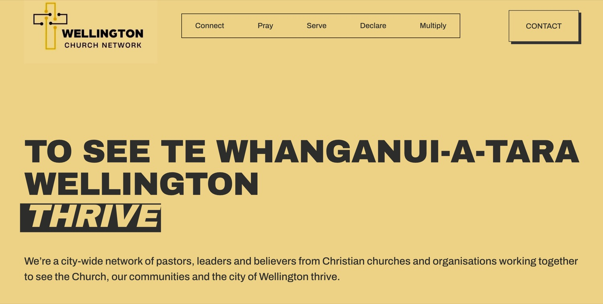
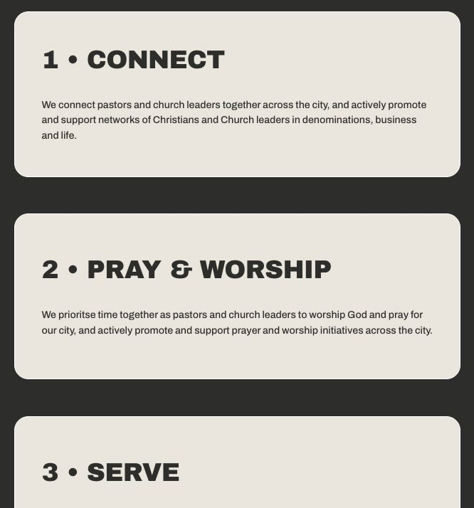
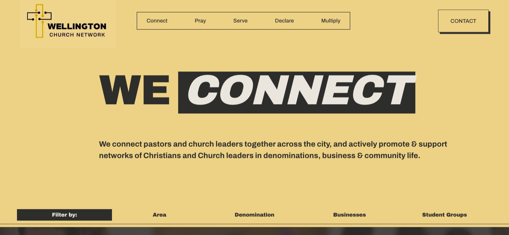
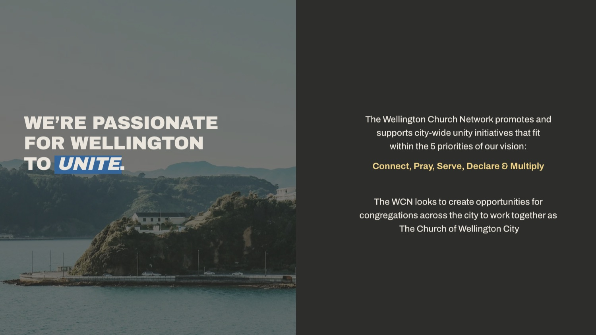

ChurchNetwork
A shared home for the city’s churches, built on the network’s own five verbs.

At a glance
What they needed
The network is pastors and leaders from dozens of congregations, gathered around one hope: to see Te Whanganui-a-Tara Wellington thrive. It needed a front door that no single church owned.
What I did
I turned the network’s verbs into the menu and built values and people pages behind them.
What changed
Five verbs in the menu explain the vision without needing a paragraph.
Five verbs as the menu
The network’s shared work comes down to five verbs: Connect, Pray, Serve, Declare, Multiply.
I used those five verbs as the navigation, so the menu explains what the network is about before anyone scrolls.

One front door

Any member church can point people to it.
The Connect page opens with what the network does in one line, then lets visitors filter by area, denomination, businesses and student groups.
Values and people

The whole site is light enough for a volunteer-run network to keep up to date.
The result
The site is simple enough to run without a web team behind it.
Want something like this?
Book a call